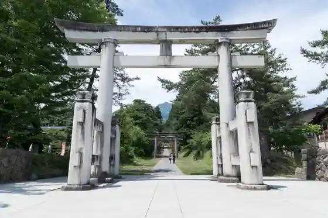
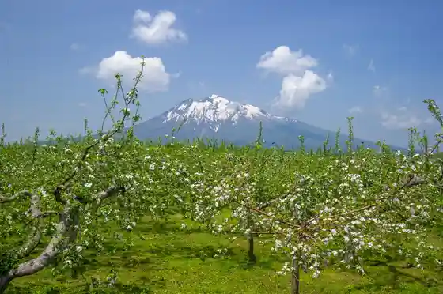
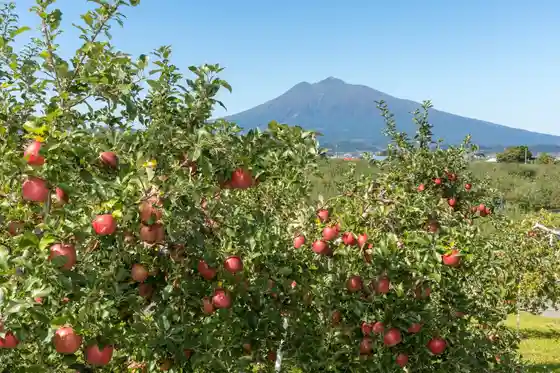
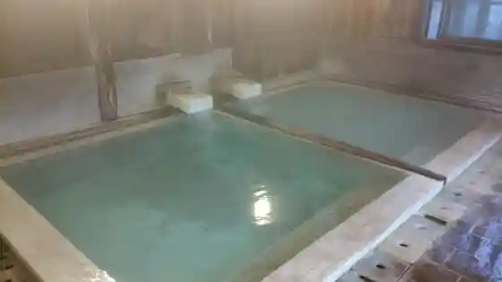

Hirosaki Park / Hirosaki Shiro
Hirosaki, Aomori · 0172-33-8733 · Official / source link
Iwakisan Shrine
Hirosaki, Aomori · 0172-83-2135 · Official / source link

Iwakisan
Hirosaki, Aomori · 0172-83-3000 · Official / source link

Hirosaki Ringo Park
Hirosaki, Aomori · 0172-36-7439 · Official / source link

Gaku Onsen Sato
Hirosaki, Aomori · 0172-83-2130 · Official / source link

Tsugaru Han Neputa Village
Hirosaki, Aomori · 0172-39-1511 · Official / source link
Saisho In Goju to
Hirosaki, Aomori · 0172-34-1123 · Official / source link
Hirosaki Renga Soko Art Museum
Hirosaki, Aomori · 0172-32-8950 · Official / source link
Aomori Eru (Be Easy Brewing/ Gyaresu no Ajito)
Hirosaki, Aomori · 0172-78-1222 · Official / source link
Fujita Kinen Garden
Hirosaki, Aomori · 0172-37-5525 · Official / source link
Kyu Daigo Jukyu Ginko Honten Honkan (Aomori Ginko Memorial Museum)
Hirosaki, Aomori · 0172-82-1642 · Official / source link
Tsugaru Kogin Sashi Experience Hirosaki Kogin Kenkyusho
Hirosaki, Aomori · 0172-32-0595 · Official / source link
Johoku Koen Kotsu Plaza
Hirosaki, Aomori · 0172-33-6755 · Official / source link
Akakura Sanshin Sha Okunomiya (Akakura Reijo)
Hirosaki, Aomori · 0172-32-2407 · Official / source link
Iki Iki Market Niji no Mato
Hirosaki, Aomori · 0172-32-6411 · Official / source link
Bu Ushi Ko Hachiman Shrine
Hirosaki, Aomori · 0172-32-2407 · Official / source link
Tsugaru Iwaki Sukai Line
Hirosaki, Aomori · 0172-83-2314 · Official / source link
Katorikku Hirosaki Kyokai
Hirosaki, Aomori · 0172-33-0175 · Official / source link
Kyu to Gijuku Gaijin Kyoshi Kan
Hirosaki, Aomori · 0172-37-5501 · Official / source link
kimori (Hirosaki Shiidoru Workshop)
Hirosaki, Aomori · 0172-88-8936 · Official / source link
Kyu Hirosaki Ritsu Library
Hirosaki, Aomori · 0172-82-1642 · Official / source link
Mori no Naka no Orchard
Hirosaki, Aomori · 080-1821-3059 · Official / source link
Hirosaki Ritsu Kanko Kan Dashi Tenjikan
Hirosaki, Aomori · 0172-37-5501 · Official / source link
Sakura Onsen
Hirosaki, Aomori · 0172-82-4332 · Official / source link
Atago Onsen
Hirosaki, Aomori · 0172-82-5885 · Official / source link
Iwakisan Kyu Bun Tera
Hirosaki, Aomori · 0172-83-2373 · Official / source link
Great Buddha Park
Hirosaki, Aomori · 0172-33-8739 · Official / source link
Roadside Station Hirosaki (Sanfesuta Ishikawa)
Hirosaki, Aomori · 0172-92-3366 · Official / source link
Obiraki Onsen
Hirosaki, Aomori · 0172-88-1280 · Official / source link
Kizuna Baths Sakai Kan Onsen
Hirosaki, Aomori · 0172-27-6106 · Official / source link
Tsugaru Yumeringo Farm
Hirosaki, Aomori · 0172-87-6089 · Official / source link
Hirosaki Ritsu Museum
Hirosaki, Aomori · 0172-35-0700 · Official / source link
Iwakisan Kanko Ringo Sono
Hirosaki, Aomori · 0172-83-2746 · Official / source link
Asobe no Mori Iwaki So
Hirosaki, Aomori · 0172-83-2215 · Official / source link
Hirosaki Tourist Information
Hirosaki, Aomori · 0172-26-3600 · Official / source link
Zenrin Machi (Zenrin Sanju Sangatera)
Hirosaki, Aomori · Official / source link
Tsukuyomi Shrine
Hirosaki, Aomori · 0172-32-2407 · Official / source link
Yayoi Ikoi no Plaza
Hirosaki, Aomori · 0172-96-2117 · Official / source link
Iwakisan Torekkingukosu
Hirosaki, Aomori · 0172-83-2093 · Official / source link
Seseragi Onsen
Hirosaki, Aomori · 0172-55-0777 · Official / source link
Hirosaki Shoten Kyokai
Hirosaki, Aomori · 0172-34-6247 · Official / source link
Iwakisan Gaku Kosu Tozando
Hirosaki, Aomori · 0172-83-3000 · Official / source link
Omori Katsuyama Iseki
Hirosaki, Aomori · 0172-82-1642 · Official / source link
Sansei Tera Onsen
Hirosaki, Aomori · 0172-95-2662 · Official / source link
Yumemirukogin Kan
Hirosaki, Aomori · 090-5194-1278 · Official / source link
Hirosaki Shiro Botanical Garden
Hirosaki, Aomori · 0172-33-8733 · Official / source link
Hakuba Ryujin Onsen
Hirosaki, Aomori · 0172-88-1250 · Official / source link
Gyararii Moriyama
Hirosaki, Aomori · 0172-35-6787 · Official / source link
Taga Shrine
Hirosaki, Aomori · 0172-86-2952 · Official / source link
Choshiro Park
Hirosaki, Aomori · 0172-40-3022 · Official / source link
Hirosaki Hachiman Shrine
Hirosaki, Aomori · 0172-32-8719 · Official / source link
Kumano Oku Sho Shrine
Hirosaki, Aomori · 0172-32-7663 · Official / source link
Yasuragi Onsen
Hirosaki, Aomori · 0172-37-8888 · Official / source link
Sato Yoko Kogin Tenjikan
Hirosaki, Aomori · 090-1491-4912 · Official / source link
Hirosaki Sports Park
Hirosaki, Aomori · 0172-27-6411 · Official / source link
Kyu Watari Tera
Hirosaki, Aomori · 0172-88-1555 · Official / source link
O Yama no Eki Iwaki Sanpo Kan (Iwaki Toreiru Center)
Hirosaki, Aomori · 0172-83-2093 · Official / source link
Tsugaru Tennen Aizen Kawasaki Senko Ba
Hirosaki, Aomori · 0172-35-6552 · Official / source link
Iwakisan no Sakura Namiki
Hirosaki, Aomori · 0172-83-3000 · Official / source link
Ishikawa Hachiman Shrine
Hirosaki, Aomori · 0172-32-2407 · Official / source link
Iwakisan Hyakuzawa Ski Area
Hirosaki, Aomori · 0172-83-2224 · Official / source link
Haguro Shrine
Hirosaki, Aomori · 090-3124-8813 · Official / source link
Agurimagatto Shiki Sai Kan
Hirosaki, Aomori · 0172-82-5000 · Official / source link
Oguri Yama Shrine
Hirosaki, Aomori · 0172-32-2407 · Official / source link
Kumano Miya
Hirosaki, Aomori · 0172-32-2407 · Official / source link
Iwakisan Akakura Kosu Tozando
Hirosaki, Aomori · 0172-83-3000 · Official / source link
Kyu Hirosaki Kaiko Sha
Hirosaki, Aomori · 0172-82-1642 · Official / source link
Tenmangu Shrine
Hirosaki, Aomori · 0172-32-5796 · Official / source link
Iwakisan Hyakuzawa Kosu Tozando
Hirosaki, Aomori · 0172-83-3000 · Official / source link
Iwakisan Sakurabayashi Park
Hirosaki, Aomori · 0172-35-1128 · Official / source link
Nippon Kirisuto Kyodan Hirosaki Kyokai
Hirosaki, Aomori · 0172-32-3971 · Official / source link
Takaoka Forest Hirosaki Han Rekishikan
Hirosaki, Aomori · 0172-83-3110 · Official / source link
Tamura Farm
Hirosaki, Aomori · 0172-88-3836 · Official / source link
Guriinhausu Kasan no Mise
Hirosaki, Aomori · 0172-27-9273 · Official / source link
Iwaki Kanko Bussan Information Center
Hirosaki, Aomori · 0172-83-3000 · Official / source link
Tomita no Shimizu
Hirosaki, Aomori · 0172-36-0677 · Official / source link
Hakusan Hime Shrine
Hirosaki, Aomori · 0172-32-2407 · Official / source link
Hirosaki Shinsen Kumi
Hirosaki, Aomori · 0172-35-8828 · Official / source link
Ishiba Ie House
Hirosaki, Aomori · 0172-32-1488 · Official / source link
Soma Romantopia Ski Area
Hirosaki, Aomori · 0172-84-2020 · Official / source link
Kyu Ito Ie House Kyu Umeda Ie House
Hirosaki, Aomori · 0172-82-1642 · Official / source link
Iwakisan Yayoi Kosu Tozando
Hirosaki, Aomori · 0172-83-3000 · Official / source link
Hirosaki Park Saicho Hisashi no Someiyoshi no
Hirosaki, Aomori · 0172-82-1642 · Official / source link
Gyo Mineyama Kaku O In
Hirosaki, Aomori · 0172-84-2127 · Official / source link
Hirosaki Machinaka Joho Center
Hirosaki, Aomori · 0172-31-5160 · Official / source link
Kyu Fujita Ie House (Dazaiosamu Gakuseijidai no Geshuku)
Hirosaki, Aomori · 0172-82-1642 · Official / source link
Kyu Iwata Ie House
Hirosaki, Aomori · 0172-82-1642 · Official / source link
Zui Rakuen
Hirosaki, Aomori · 0172-96-2744 · Official / source link
Hirosaki Gakuin Gaijin Senkyoshi Kan
Hirosaki, Aomori · 0172-38-6111 · Official / source link
Yo Kame Sono
Hirosaki, Aomori · 0172-39-1511 · Official / source link
CCC Tour (Chair, Coffee and Cycling Tour)
Hirosaki, Aomori · 0172-78-5090 · Official / source link
Sawada Jinmei Miya
Hirosaki, Aomori · Official / source link
Hirosaki Neputao Hayashi Raibu NEPUTA sa KADARE
Hirosaki, Aomori · 0172-40-4082 · Official / source link
Hiyoshi Shrine
Hirosaki, Aomori · 0172-32-2407 · Official / source link
Ki Village Ki Hin Seisakusho
Hirosaki, Aomori · 0172-87-2747 · Official / source link
Yoko Farm Iwaki
Hirosaki, Aomori · 0172-82-3710 · Official / source link
Kyu Hirosaki Han Shoshi House (Kyu Sasamori Ie House)
Hirosaki, Aomori · 0172-82-1642 · Official / source link
Tomie Tsuruta Jinmei Miya
Hirosaki, Aomori · 0172-32-2407 · Official / source link
Kyu Ishitoya Ie House
Hirosaki, Aomori · 0172-82-1642 · Official / source link
Shimizu Kannon Mizu
Hirosaki, Aomori · 0172-86-2609 · Official / source link
Hirosaki Park no Nezuko
Hirosaki, Aomori · 0172-82-1642 · Official / source link